Inicio
Bienvenido a Creel, un Pueblo Mágico rodeado de montañas, bosques y cultura rarámuri. Creel es un Pueblo Mágico en la Sierra Tarahumara, conocido por su cultura rarámuri, paisajes naturales y acceso a las Barrancas del Cobre.
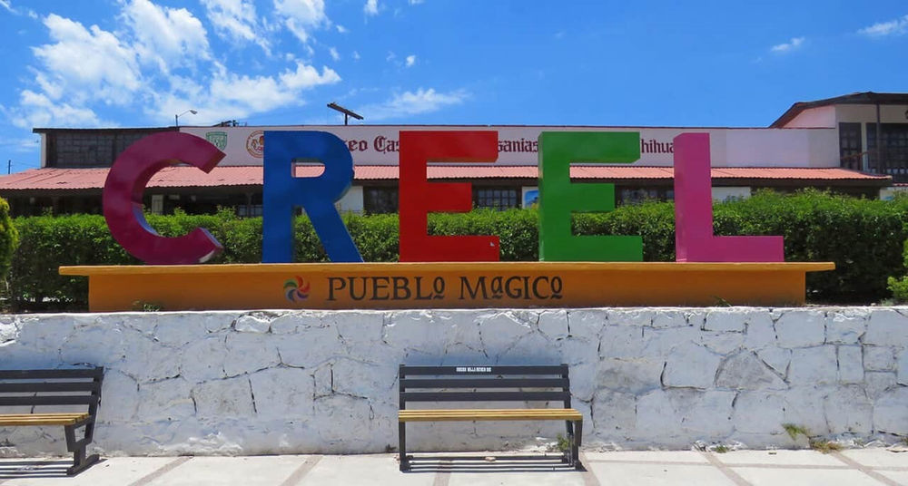
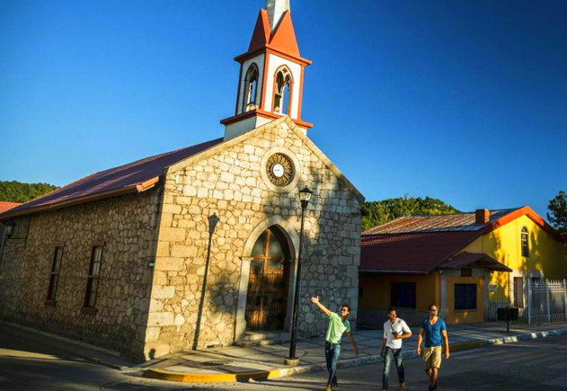
Información del lugar
Ubicación
Creel se encuentra en la Sierra Tarahumara, en el estado de Chihuahua, México. Es considerado la puerta de entrada a las Barrancas del Cobre, un impresionante sistema de cañones más grande y profundo que el Gran Cañón en algunos puntos.
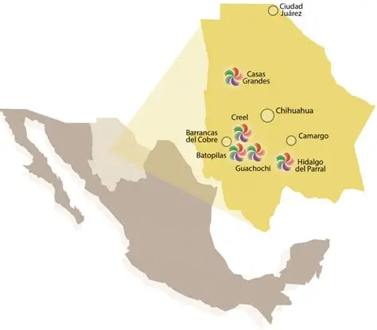
Historia
Creel fue fundado a inicios del siglo XX y creció con la llegada del ferrocarril Chihuahua al Pacífico. Su desarrollo estuvo ligado a la actividad forestal y al turismo, convirtiéndose con el tiempo en uno de los destinos más importantes del norte de México.
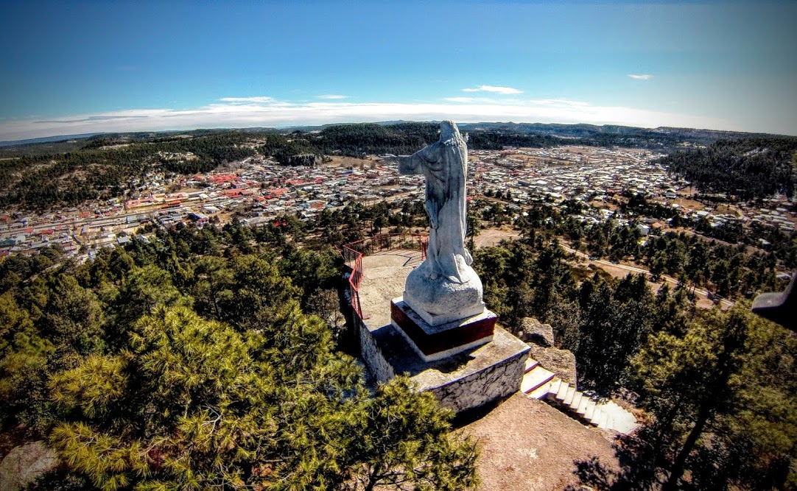
Lugares turísticos
Lago de Arareko
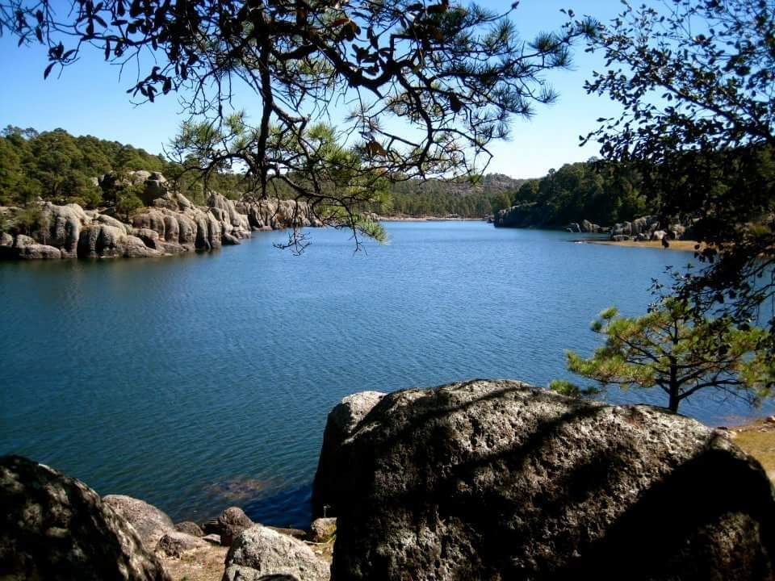
Valle de los Monjes
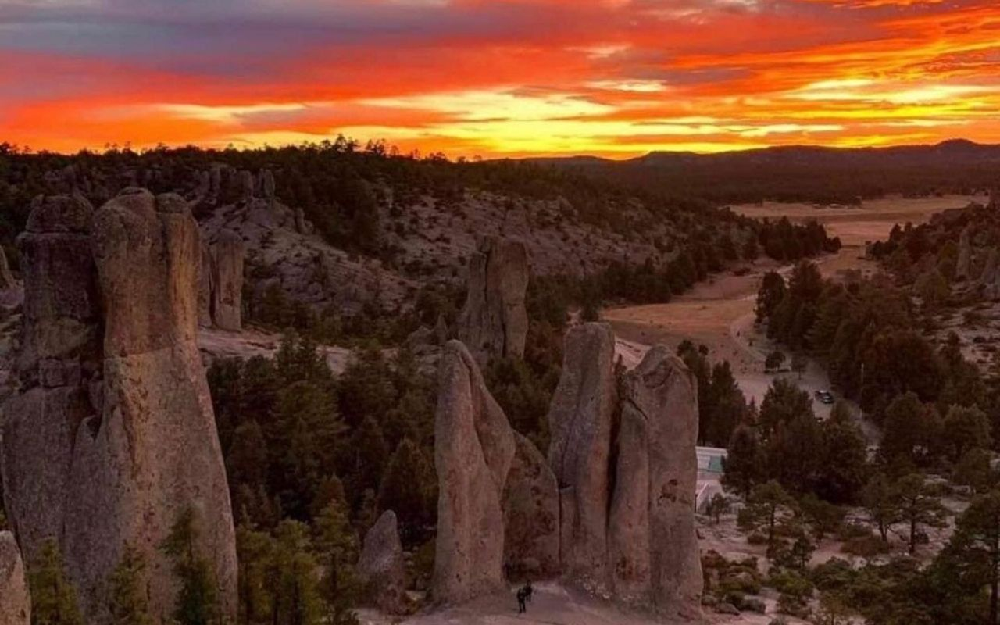
Valle de las Ranas
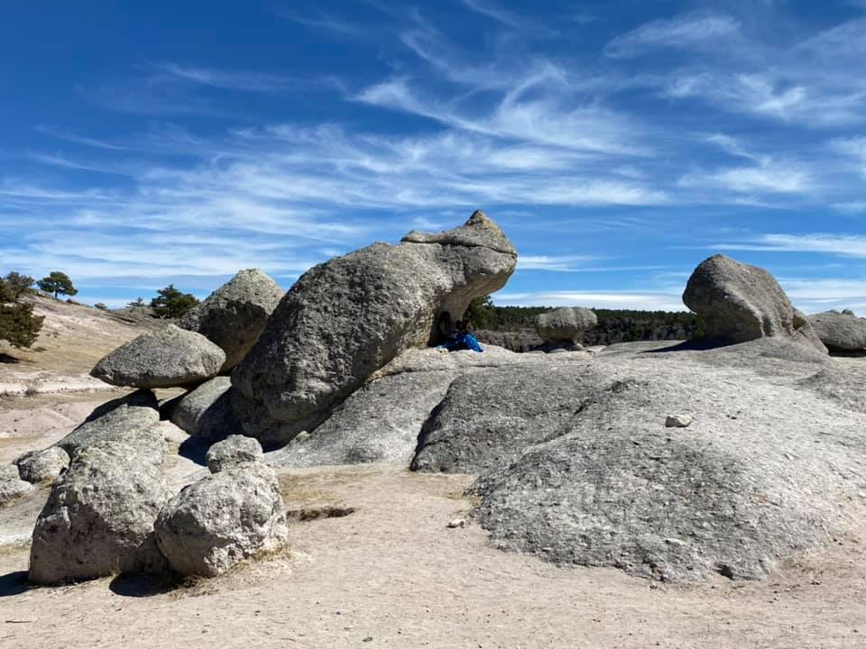
Misión de San Ignacio
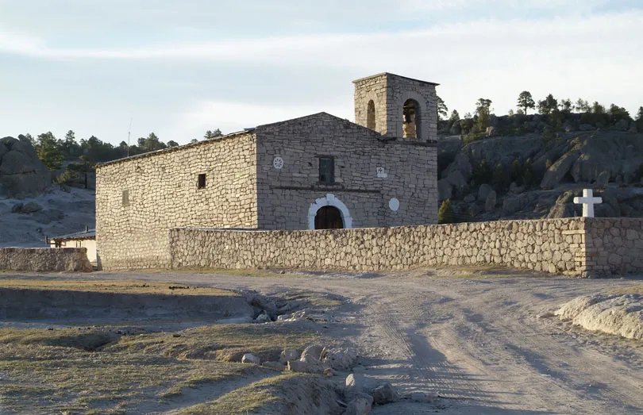
Gastronomía
Comida típica
La gastronomía de Creel se caracteriza por su comida tradicional del norte de México y la cultura rarámuri. Destacan platillos sencillos y nutritivos como la carne seca, las tortillas hechas a mano, los tamales y el pinole, preparados con ingredientes locales de la Sierra Tarahumara.
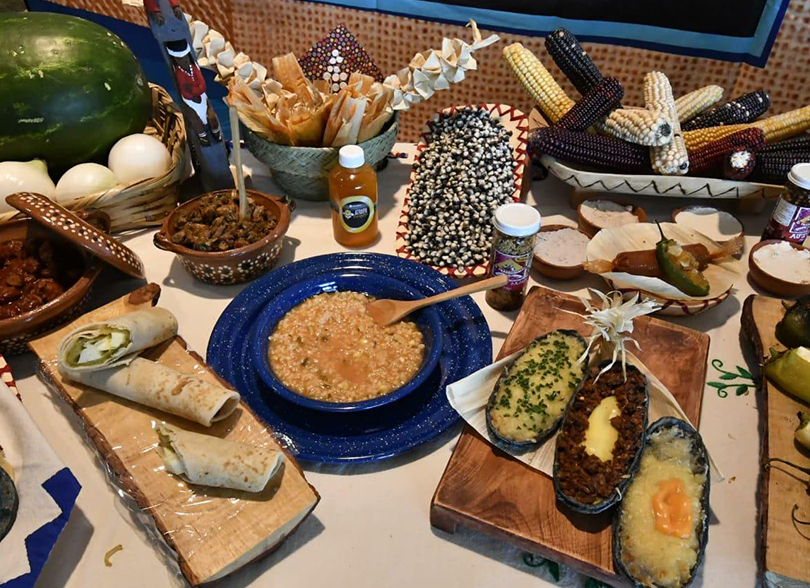
Postres
Entre los postres destacan dulces regionales, pan tradicional y conservas artesanales. Entre los más comunes están los dulces de leche, las conservas de manzana y durazno, el pan dulce casero y algunos postres hechos con piloncillo y canela.
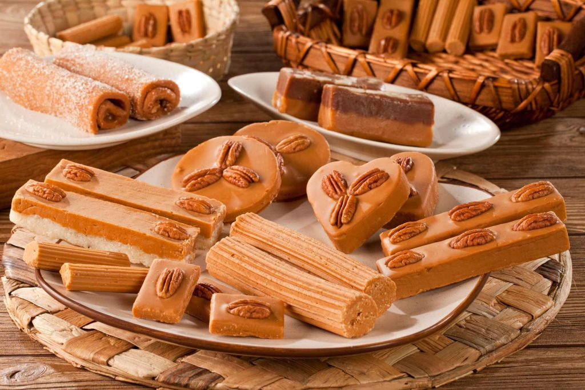
Galería
Cultura rarámuri
Tradiciones, vestimenta y forma de vida del pueblo indígena de la región.
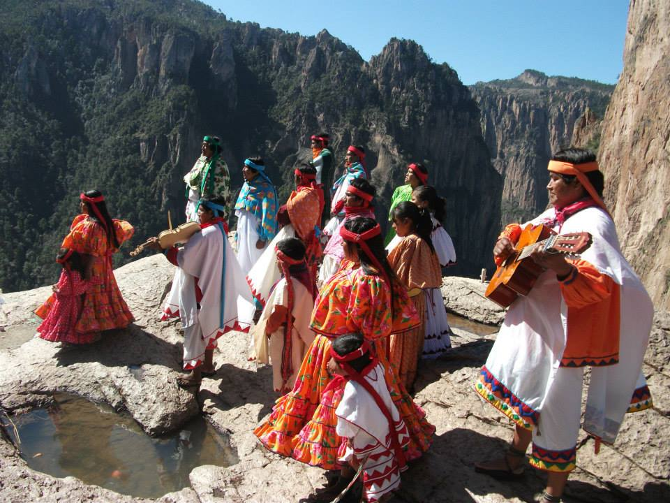
Ferrocarril Chepe
Uno de los trenes más famosos de México que recorre la Sierra Tarahumara.
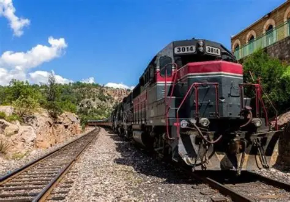
Bosques de pino
Grandes paisajes naturales con bosques fríos y vistas impresionantes.
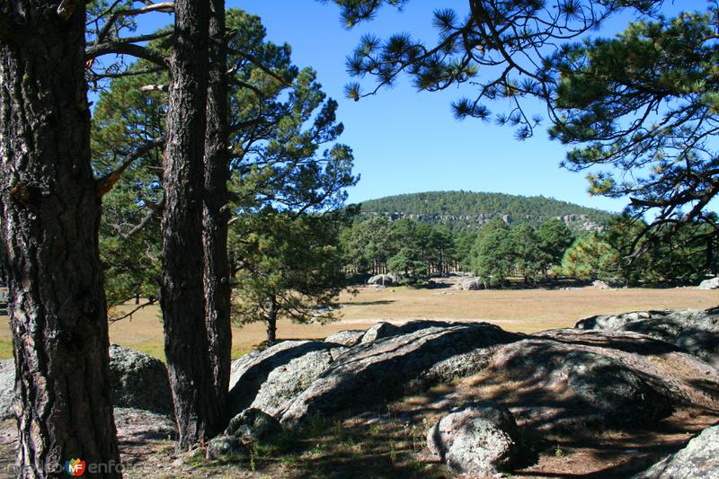
Artesanías
Productos hechos a mano como tejidos, cestas y objetos tradicionales rarámuri.
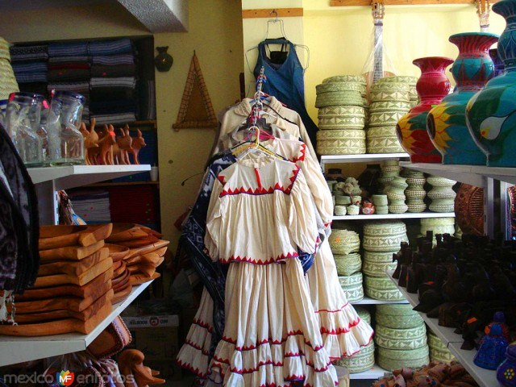
Contacto
Si deseas más información sobre Creel o planear tu visita, envíanos un mensaje.